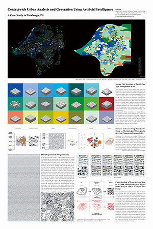

Comparative analysis of urban structures in three American Rust Belt cities
chitectural landscapes. The original article can be accessed here. 26.Dec.2023
Python, the third book of Digital Media Series is released
The third book in our Digital Media Series, PYTHON, has finally been released. Although we aimed for a 2021 launch, the pandemic caused delays, but we’re excited to bring you this essential Python tutorial book. Whether you’re diving into AI or enhancing your computational skills, this book is your go-to guide. Click here to see more details about this project.6.Aug.2024
Classifying Building Form Using Deep Learning
The paper "An inductive method for classifying building form in a city with implications for orientation" is published. This paper explores the role of deep learning in analyzing building forms. Central to this study is the debate on whether the orientation of buildings, shaped by a city's unique environmental, social, and cultural contexts, should influence architectural classifications. Employing a detailed dataset and a case study from Montreal, the research examines buildings with varying orientations to understand how these aspects reflect and define urban identity. This work not only advances building form analysis but also encourages a reimagined understanding of our cities' architectural landscapes. The original article can be accessed here. 26.Dec.2023
Design Automation of Refugee Camp Layout is Initiated
Vice President of Research (VPR) Catalyst Grant is awarded to initiate the research projecte titled "An Automated Deployable Camp Layout Technology for Rapid, Efficient, and Safer Refugee Settlement Design.". This research addresses swifter, more effective responses to displacement in the urgent global refugee crisis, characterized by both traditional geopolitical factors and emerging environmental causes. Acknowledging the transnational nature of this challenge, the study proposes an innovative AI-driven design automation technology to expedite the creation of well-organized refugee camp layouts, ensuring immediate and provisional settlements that foster both safety and integration. This endeavor holds potential for broader applications beyond refugee contexts, including military and industrial facility layout design. By significantly reducing design time, enhancing construction efficiency, and accommodating diverse needs, this research contributes to the innovation of more secure, efficient, and sustainable solutions in refugee settlement design and beyond.03.Dec.2023
Neural Networks in Computer-Aided Architectural Design Over Three Decades
A recently published article in the Design Science Journal dives deep into the computer-aided architectural design (CAAD) and its intersection with machine learning, specifically neural networks. The study, titled "Three decades of machine learning with neural networks in computer-aided architectural design (1990–2021)", offers a systematic review of publications in this domain, highlighting trends, historical contexts, and future challenges. A significant takeaway from this research is the call for increased transparency in CAAD studies using deep learning. The author underscores the importance of reproducibility, emphasizing the need to share datasets, training experiments, and other critical information. Interested readers are encouraged to delve into the full article for a detailed exploration and guidelines aimed at improving the quality of CAAD research with machine learning. The original article can be accessed here.25.08.2023
Form Data as a Resource in Architectural Analysis
A scholarly article has been recently published in the prestigious Digital Creativity journal by Routledge, detailing research on architectural forms utilizing artificial intelligence, which contributed to constructing a typology for the Carpetian Wood Church, a valuable architectural type with local and historical significance. The author of this article is my esteemed advisee, Michael Hasey, whose master's thesis was researched and taught under my guidance at the Computational Design Laboratory with Daniel Cardoso Llach, the lab director. This study demonstrates a pioneering approach to how data science-based architectural form research can play a significant role in the preservation of endangered architecture. The article can be found here.30.04.2023
Urban Form Analysis through Morphometry and Machine Learning
Jinmo Rhee's new chapter titled "Urban form Analysis through Morphometry and Machine Learning" was published in the book "Artificial Intelligence in Urban Planning and Design". This chapter introduces the concept of morphometry, which is a subbranch in form studies in biology and has already actively employed AI technology, i.e., machine learning techniques, in the context of architectural and urban form analysis. The introduction is centered on how this concept as a distinct approach to form studies that can help trace latent granular patterns of urban types and fabrics and thereby change the understanding of city space. By presenting a research example of urban form analysis and synthesis using the concept and methods from morphometry, this chapter demonstrates the process of constructing urban form dataset, extracting features from the dataset, identifying urban types based on the extracted features, and evaluating the results of categorization. Based on this example, this chapter opens the potential that urban form analysis can be expanded into more complex dimensional studies by integrating formal and nonformal information due to the use of AI technologies. The chapter can be found here.28.Jan.2022
Context-Rich Urban Analysis at the 21st Venice BiennaleOne of Jinmo Rhee's representative works, a video of context-rich urban analysis, was showcased in the Austrian Pavilion of the 21st Venice Biennale. This work proposes a new data format, treating the city as a set of individual urban spaces rather than dividing them by existing boundaries.His video presents an innovative approach to urban analysis, one that moves beyond traditional maps and diagrams to capture the full complexity of the built environment. By treating the city as a collection of individual spaces, Rhee is able to uncover hidden patterns and connections that might be missed by more traditional methods. This approach has the potential to transform our understanding of urban environments, allowing us to see them in new and more nuanced ways.15.Aug.2021
DEEPRISE, the Grand Prize from Digital Architecture 2021
 One of Jinmo's recent project, DEEPRISE, won the international competition to Digital Architecture (DA 2021) hosted by Architectural Institute of Korea (AIK) and Korea Ministry of Land, Infrastructure and Transport. DEEPRISE is the prototype of massing a high-rise building form using a deep learning (DL) model. The research team collected data comprehending diverse forms of high-rise building from major cities in the world to train a generative DL model (IntroVAE) to capture morphological features. After clustering the features, they can distinguish types of high-rise buildings and use that information to generate novel high-rise building forms. This research demonstrates that generative DL models can uncover the latent types of architectural form in large datasets and can expand the typological interpretation of complex architectural forms. Besides, we demonstrate the potential of the proposed DL method for building massing design by developing a proposal of a high-rise building form based on three techniques: exploration, synthesis, and interpolation. The details about the DEEPRISE can be found here.
30.Nov.2021
In Pursuit of Deep Architectural Design, Rumoer #76
Jinmo Rhee and his colleague write a chapter about deep learning and design for a design magazine, Rumoer. In this article they will focus on a branch of the work of CRAIDL that addresses generative design in the context of architectural configuration. Generative design is an indirect method of design where the designer employs models that embed some form of decision-making, such as instructions or behaviors, to generate design alternatives. With the current technology, this generation typically relies on a parametric structure, rules, or other mechanisms that are explicitly defined by the designer. However, designers do not always have access to the rationale necessary to create certain types of design. Not surprisingly, designers conventionally rely on their experience and intuition to generate good design solutions instead of looking for explicit design logic. This is where Deep Learning comes into play. DL is the field of AI concerned with using some experience, such as data or simulation, to make a certain model (usually neural networks with multiple layers) learn a specific task. In the case of generative design, they are interested in training neural networks to incorporate an alien or implicit design rationale into our design process. Architectural design is a complex activity that addresses wicked problems, so they consider it fundamental to explore the relationships among different design aspects that can benefit from DL. In this paper, they will introduce two projects that tackle distinct facets of design: An Academy of Spatial Agents and Deeprise. The article can be found in Rumoer #76. 24.Apr.2021
Creative AI + Design Launchpad, CRAIDL, is established under CoDeLab at CMU
Jinmo Rhee and his other design colleagues founded an Artificial Intelligence (AI) research initiative at Carnegie Mellon University’s Computational Design Laboratory. Housed in the School of Architecture, it focuses on the intersection of AI and art, design, engineering, and architecture in domains including Natural Language Processing, Reinforcement, Learning, Deep Learning, and Machine Learning. CRAIDL is a natural result of recent inquiries, projects, research, and publications developed at the lab and in collaboration with other schools and departments at CMU including the School of Computer Science and the Language Technologies Institute. CRAIDL is also an interdisciplinary platform to bring academic and industry research on AI closer together, and invites partnerships and collaborations with a broad range of interested people and institutions. The details about the CRAIDL can be found here.15.Feb.2021
Architectural Deisgn Human Resource Development ProjectJinmo Rhee's research proposal about AI for Urban Architecture is selected as the grant program of the Architectural Deisgn Human Resource Development Project 2020, which is promoted by the Korean Ministry of Land, Infrastructure, and Transport and KAIA (Korea Agency for Infrastructure Technology Advancement). Through this project, they plan to support the cost of architectural research in overseas institutes. In this research, Jinmo will explore the social values of architectural AI in urban scale for a year by collecting the urban space data, processing them into the AI-recongnizable format, and developing the model to train the data.18.Dec.2020
AI Development Partnership to Revolutionize Apartment Complex Design in Korea
Jinmo Rhee is leading a research team that has recently signed a significant contract with DLE&C, a reputable architectural engineering and construction company based in Korea. The contract involves a three-year research and development project with the aim of creating an advanced AI system that can automatically generate the layout of an apartment complex. The project is an exciting opportunity to showcase the latest advancements in AI technology within the architecture and construction industries. The team is set to develop cutting-edge algorithms that can analyze various factors, such as the building site, environmental conditions, and local building codes, to generate an optimal layout for the apartment complex. The partnership between Rhee's team and DLE&C is expected to yield significant results over the next few years, with the potential to revolutionize the way architects and developers approach building design. By leveraging the power of AI, the team aims to create a more efficient, sustainable, and cost-effective way of building apartment complexes. The project also presents an opportunity for Jinmo Rhee's research team to gain practical experience in the field of architecture and construction, further expanding the applications of AI and machine learning in various industries. Overall, this partnership between DLE&C and Rhee's team is a promising collaboration that could lead to significant advancements in the field of architecture and construction, benefiting both the industry and the wider community.28.Oct.2020
Young CAADRIA Award 2020
Jinmo Rhee for receiving the 2020 Young CAADRIA Award for his promising research exploring Artificial Intelligence and Machine Learning techniques in architecture. Young CAADRIA Awards are funded by The Association for Computer-Aided Architectural Design Research in Asia (CAADRIA), and given by a committee consisting jointly of CAADRIA, the Paper Selection Committee, and the Conference Host. The winner is decided after the acceptance of papers. Awards are applied to conference registration fees. Due to COVID-19, this year’s 25th International Conference of the Association for Computer-Aided Architectural Design Research in Asia will be held as a virtual conference from August 5-8, 2020. Click here
One of Jinmo's recent project, DEEPRISE, won the international competition to Digital Architecture (DA 2021) hosted by Architectural Institute of Korea (AIK) and Korea Ministry of Land, Infrastructure and Transport. DEEPRISE is the prototype of massing a high-rise building form using a deep learning (DL) model. The research team collected data comprehending diverse forms of high-rise building from major cities in the world to train a generative DL model (IntroVAE) to capture morphological features. After clustering the features, they can distinguish types of high-rise buildings and use that information to generate novel high-rise building forms. This research demonstrates that generative DL models can uncover the latent types of architectural form in large datasets and can expand the typological interpretation of complex architectural forms. Besides, we demonstrate the potential of the proposed DL method for building massing design by developing a proposal of a high-rise building form based on three techniques: exploration, synthesis, and interpolation. The details about the DEEPRISE can be found here.
30.Nov.2021
In Pursuit of Deep Architectural Design, Rumoer #76
Jinmo Rhee and his colleague write a chapter about deep learning and design for a design magazine, Rumoer. In this article they will focus on a branch of the work of CRAIDL that addresses generative design in the context of architectural configuration. Generative design is an indirect method of design where the designer employs models that embed some form of decision-making, such as instructions or behaviors, to generate design alternatives. With the current technology, this generation typically relies on a parametric structure, rules, or other mechanisms that are explicitly defined by the designer. However, designers do not always have access to the rationale necessary to create certain types of design. Not surprisingly, designers conventionally rely on their experience and intuition to generate good design solutions instead of looking for explicit design logic. This is where Deep Learning comes into play. DL is the field of AI concerned with using some experience, such as data or simulation, to make a certain model (usually neural networks with multiple layers) learn a specific task. In the case of generative design, they are interested in training neural networks to incorporate an alien or implicit design rationale into our design process. Architectural design is a complex activity that addresses wicked problems, so they consider it fundamental to explore the relationships among different design aspects that can benefit from DL. In this paper, they will introduce two projects that tackle distinct facets of design: An Academy of Spatial Agents and Deeprise. The article can be found in Rumoer #76. 24.Apr.2021
Creative AI + Design Launchpad, CRAIDL, is established under CoDeLab at CMU
Jinmo Rhee and his other design colleagues founded an Artificial Intelligence (AI) research initiative at Carnegie Mellon University’s Computational Design Laboratory. Housed in the School of Architecture, it focuses on the intersection of AI and art, design, engineering, and architecture in domains including Natural Language Processing, Reinforcement, Learning, Deep Learning, and Machine Learning. CRAIDL is a natural result of recent inquiries, projects, research, and publications developed at the lab and in collaboration with other schools and departments at CMU including the School of Computer Science and the Language Technologies Institute. CRAIDL is also an interdisciplinary platform to bring academic and industry research on AI closer together, and invites partnerships and collaborations with a broad range of interested people and institutions. The details about the CRAIDL can be found here.15.Feb.2021
Architectural Deisgn Human Resource Development ProjectJinmo Rhee's research proposal about AI for Urban Architecture is selected as the grant program of the Architectural Deisgn Human Resource Development Project 2020, which is promoted by the Korean Ministry of Land, Infrastructure, and Transport and KAIA (Korea Agency for Infrastructure Technology Advancement). Through this project, they plan to support the cost of architectural research in overseas institutes. In this research, Jinmo will explore the social values of architectural AI in urban scale for a year by collecting the urban space data, processing them into the AI-recongnizable format, and developing the model to train the data.18.Dec.2020
AI Development Partnership to Revolutionize Apartment Complex Design in Korea
Jinmo Rhee is leading a research team that has recently signed a significant contract with DLE&C, a reputable architectural engineering and construction company based in Korea. The contract involves a three-year research and development project with the aim of creating an advanced AI system that can automatically generate the layout of an apartment complex. The project is an exciting opportunity to showcase the latest advancements in AI technology within the architecture and construction industries. The team is set to develop cutting-edge algorithms that can analyze various factors, such as the building site, environmental conditions, and local building codes, to generate an optimal layout for the apartment complex. The partnership between Rhee's team and DLE&C is expected to yield significant results over the next few years, with the potential to revolutionize the way architects and developers approach building design. By leveraging the power of AI, the team aims to create a more efficient, sustainable, and cost-effective way of building apartment complexes. The project also presents an opportunity for Jinmo Rhee's research team to gain practical experience in the field of architecture and construction, further expanding the applications of AI and machine learning in various industries. Overall, this partnership between DLE&C and Rhee's team is a promising collaboration that could lead to significant advancements in the field of architecture and construction, benefiting both the industry and the wider community.28.Oct.2020
Young CAADRIA Award 2020
Jinmo Rhee for receiving the 2020 Young CAADRIA Award for his promising research exploring Artificial Intelligence and Machine Learning techniques in architecture. Young CAADRIA Awards are funded by The Association for Computer-Aided Architectural Design Research in Asia (CAADRIA), and given by a committee consisting jointly of CAADRIA, the Paper Selection Committee, and the Conference Host. The winner is decided after the acceptance of papers. Awards are applied to conference registration fees. Due to COVID-19, this year’s 25th International Conference of the Association for Computer-Aided Architectural Design Research in Asia will be held as a virtual conference from August 5-8, 2020. Click here
to see more details about his work.7.Aug.2020
Book Architectural A.I. is Published
This is a book about architectural design and artificial intelligence technology in korean. The book provides opportunity to imagine how artificial intelligence technology and architectural design can meet and be integrated through several experiments. Prior to the experiments, this book look back at how computers and artificial intelligence technology were introduced into architectural design and how the artificial intelligence technology that we know today has started and developed with designers. Based on this, this book examines actual experiments in which artificial intelligence technology is applied in urban and architectural scales. Each experiment reveals that AI technology can serve as a supportive tool and passive companion to help designers, not clichés who threaten the future of humanity seen in Hollywood movies, explore ... Click here
to see more details about the book.3.May.2020
2020 GuSH Research Grants from CMUJinmo Rhee has received 2020 Graduate Small Project Help (GuSH) Research Grants from Carnegie Mellon University.GuSH Research grants provide small grants to graduate students for forwarding their research at Carnegie Mellon University. The Digital Media Series (DMS)' first book, 'Rhinoceros', was successfully published thanks to GuSH Grant in 2018, and in 2020 Jinmo Rhee won the 2020 GuSH Grant as the project to publish the second book, 'Grasshopper', of the same series. The Second book of Digital Media Series will be released in summer 2020.
Grasshopper, the second book of Digital Media Series is released
Due to continuous GuSH funds, Digital Media Series project is arrived the second destination, Grasshopper, and on smooth sailing to third destination, GH Python. Digital Media Series is a project to publish digital and physical materials of digital media courses in school of architecture. Grasshopper, one of this series can be published through Amazon.Click here to see more details about this project.3.Jun.2020
The Grand Prize from Digital Architecture and Best Paper Prize
 Jinmo Rhee has won the international competition to Digital Architecture (DA 2019) hosted by Architectural Institute of Korea (AIK) and Korea Ministry of Land, Infrastructure and Transport. His work "MASSIGNER, Housing Design Tool based on Artificial Intelligence" is a prototype of Grasshopper Plug-in, searching an optimized volume responding to given two main variables: the building codes and voids options. This plug-in includes genetic algorithm (GA) to propose a proper volume with voides to given building codes. Not only suggesting a properly generated volume through optimization by GA, this plug-in also provide a simple layout of interior by minimizing the number of corner and creating optimized rectangular space.
Jinmo Rhee has won the international competition to Digital Architecture (DA 2019) hosted by Architectural Institute of Korea (AIK) and Korea Ministry of Land, Infrastructure and Transport. His work "MASSIGNER, Housing Design Tool based on Artificial Intelligence" is a prototype of Grasshopper Plug-in, searching an optimized volume responding to given two main variables: the building codes and voids options. This plug-in includes genetic algorithm (GA) to propose a proper volume with voides to given building codes. Not only suggesting a properly generated volume through optimization by GA, this plug-in also provide a simple layout of interior by minimizing the number of corner and creating optimized rectangular space.
This plug-in goes beyond just showing automation and is a good example of how AI can be linked and used in construction. The plug-in, which filters out unnecessary ones from a number of options and suggests the final output through specific options, illustrates the potential of the architecture with AI.
Recognized as a Project Focusing on Praticality that Integrates Architecture and AI AIK said "This year, all the entries will be printed on the panel and displayed at the Fall Conference of the Architectural Institute of Korea held at Chungnam National University...Overall submissions for 2019 not only actively utilize the latest technologies in the AEC / FM field, but also feature works that focus on their practical use...MASSIGNER, the winnig project in the field of digital application technology, stands out as a housing design program that uses one of artificial intelligence technology, genetic algorithm..."
Furthermore, this work was submitted to Annual Architectural Conference of AIK and won the Best Paper Prize: “A Study of Automation of Housing Design Method Using Artificial Intelligence: Optimal Space Exploration with Genetic Algorithm Based on Building Codes”. Click here to see more details about Massigner.22.Nov.2019
Korean Institute of Architects Convention and Exhibition 2019

Jinmo Rhee’s MSCD thesis “Context-rich Urban Analysis and Generation Using Artificial Intelligence: A Case Study in Pittsburgh, PA” was selected by the Korean Institute of Architects (KIA) for the special exhibition “Korean Student in the United States Special Exhibition 2019” in KIA Convection and Exhibition 2019 after winning a juried competition. With a focus on Pittsburgh’s urban fabric, Rhee’s MSCD thesis explores how computational methods may enable a new approach to analyzing a city’s morphology. In developing his thesis, Rhee worked with Carnegie Mellon School of Architecture professors Daniel Cardoso Llach, Ramesh Krishnamurti, Daragh Byrne, and Eddy Man Kim, and School of Design professor Molly Wright Steenson. His work reports on the analytical potential of machine learning methods for urban analysis. It documents a new method for data-driven urban analysis based on diagrammatic images describing each building in a city in relation to its immediate urban context. By statistically analyzing architectural and contextual features in this new dataset, the method can identify clusters of similar urban conditions and produce a detailed picture of a city’s morphological structure. Remapping the clusters from data to 2D space, our method enables a new kind of urban plan that displays gradients of urban similarity. Taking Pittsburgh as a case study we demonstrate this method, and propose “morphological types” as a new category of urban analysis describing a given city’s specific set of distinct morphological conditions. The paper concludes with a discussion of the implications of this method and its limitations, as well as its potentials for architecture, urban studies, and computation. Click here to see more details about this project.24.Oct.2019
2018 GuSH Research Grants from CMUJinmo Rhee has received 2018 Graduate Small Project Help (GuSH) Research Grants from Carnegie Mellon University.GuSH Research grants provide small grants to graduate students for forwarding their research at Carnegie Mellon University. Grants are provided by the Graduate Student Assembly (GSA) and the Provost's Office, and are managed by the Office of the Assistant Vice Provost for Graduate Education. GuSH grants are intended to be used against costs incurred in the completion of research required for a graduate degree at Carnegie Mellon. These funds are intended to be utilized by students whose personal or departmental resources have been exhausted.
Jinmo Rhee, "Computational Design Study Material Development: Introduction to Digital Media”
Rhinoceros, the first book of Digital Media Series is released
Due to GuSH funds, Digital Media Series project was able to be initiated. Digital Media Series is a project to publish digital and physical materials of digital media courses in school of architecture. Rhinoceros, one of this series can be published through Amazon.Click here to see more details about this project.24.Oct.2018